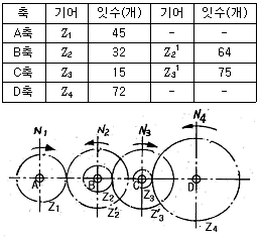
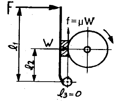
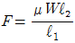
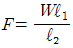
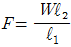
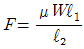

자동차정비산업기사 (2013-03-10 기출문제)
1과목: 일반기계공학
1. 철강의 표면경화법 중 강재를 가열하여 그 표면에 AI을 고온에서 확산 침투시켜 표면을 강화하는 법은?
- 크로마이징(chromizing)
- 칼로라이징(calorzing)
- 실리콘나이징(siliconzing)
- 세라다이징(sheradizing)
(정답률: 82%)

2. 드릴 날의 파손원인으로 거리가 먼 것은?
- 드릴이 짧게 고정된 상태에서 가공할 때
- 절삭날이 규정된 각도와 형상으로 연삭되지 않아 한쪽으로 과대한 절삭력이 작용할 때
- 드릴 가공 중에 드릴이 외력에 의해 구부러진 상태로 계속 가공할 때
- 이송이 너무 커서 절삭저항이 증가할 때
(정답률: 85%)
3. 단면적 400mm2 인 봉에 6 kN 의 추를 달았더니, 허용인장응력에 도달하였다. 이 봉의 인장강도가 30 MPa 이라면 안전율은 얼마인가?
- 2
- 3
- 4
- 5
(정답률: 38%)
4. 저항 점용접은 사용이 간편하고 용접 자동화가 용이하므로 자동차 산업현장에서 널리 이용되고 있다. 이러한 점용접의 품질을 평가하는 방법으로 거리가 먼 것은?
- 피로 시험
- 마멸 시험
- 초음파 탐상 시험
- 인장 시험
(정답률: 65%)
5. 보 속에 발생하는 굽힘응력의 크기에 대한 설명 중 옳은 것은?
- 굽힘모멘트의 크기에 반비례한다.
- 굽힘응력은 중립면에서 최대값을 갖는다.
- 중립면으로부터 거리에 정비례한다.
- 단면의 중립축에 대한 단면2차모멘트에 정비례한다.
(정답률: 58%)
6. 지름이 d 인 원형단면봉에 비틀림 토크가 작용할 때의 전단응력이 τ 라고 하면, 지름이 3d 인 동일 재질의 원형단면봉에 동일한 비틀림 토크가 작용할 때의 전단응력은?
- 1/9 τ
- 9 τ
- 1/27 τ
- 27 τ
(정답률: 59%)
7. 정확도와 정밀도에 대한 설명으로 틀린 것은?
- 정확도는 참값에 대한 한쪽으로 치우침이 작은 정도를 뜻한다.
- 정밀도는 측정치의 흩어짐이 작은 정도를 뜻한다.
- 정밀도는 모표준편차로 나타낼 수 있다.
- 정확도는 계통적 오차보다는 우연오차에 의한 원인이 크다.
(정답률: 66%)
8. 그림과 같은 기어 트레인 장치에서 A축과 B축이 만나는 기어의 잇수를 각각 Z1, Z21 라고 하고, B축과 C축이 만나는 기어의 잇수를 각각 Z2, Z31, C축과 D축이 만나는 기어의 잇수를 각각 Z3, Z4라고 할 때 그 잇수가 다음 표와 같을 경우 A축의 회전수(N1)가 1600 rpm 일 때 D축의 회전수(N4)는 몇 rpm인가?

- 90
- 100
- 110
- 120
(정답률: 61%)
9. 냉간가공과 열간가공을 구분하는 것은?
- 가공 경화
- 변형 경화
- 나선 전위
- 재결정 온도
(정답률: 89%)
10. 나사의 풀림방지를 위한 방법으로 거리가 먼 것은?
- 분할 핀을 사용하여 조립
- 캡 너트를 사용
- 로크 너트를 사용
- 스프링 와셔를 적용
(정답률: 77%)
11. 유압펌프를 처음 시동할 경우 작동방법에 관한 설명으로 옳지 않은 것은?
- 시동 시 펌프가 차가울 경우 뜨거운 작동유를 사용하여 펌프 온도를 상승시킨다.
- 신품인 베인펌프는 압력을 걸어 시동하고 최초 5분 정도는 간헐적으로 작동시켜 길들이는 것이 좋다.
- 시동 전에 회전상태를 검사하여 플렉시블 캠링의 회전 방향과 설치 위치를 정확히 해둔다.
- 작동유는 적절한 정도로 맑고 깨끗하게 사용해야 한다.
(정답률: 81%)
12. 다음 중 베어링용 합금이 아닌 것은?
- 켈밋(kelmet)
- 건 메탈(gun metal)
- 화이트 메탈(white metal)
- 배빗 메탈(babbitt metal)
(정답률: 68%)
13. 주조품을 제작하기 위한 모형(pattern)의 종류 중 주물형상이 크고 소량의 주조품을 요구할 때 그 형상의 골격을 제작한 후 그 간격의 공간을 점토 등의 물질로 메꾸어 제작하는 모형은?
- 코어 모형
- 부분 모형
- 매치 플레이트 모형
- 골조 모형
(정답률: 75%)
14. 축에 끼운 링이 빠지는 것을 방지하기 위하여 사용하며 끝 부분을 두 갈래로 벌려 굽혀 빠지지 않도록 하는 기계요소는?
- 테이퍼 핀
- 코터
- 분할 핀
- 코킹
(정답률: 80%)
15. 다음은 각 원소가 탄소강의 성질에 미치는 영향으로 틀린 것은?
- 망간 : 연신율의 감소를 억제시키고, 인장강도와 고온강도를 증가시킨다.
- 규소 : 강의 경도, 탄성한계, 인장강도를 높여 주지만 연신율과 충격치는 감소시킨다.
- 인 : 상온에서 충격값을 저하시켜 상온취성의 원인이 된다.
- 황 : 0.02 % 정도의 황은 강의 인장강도, 연신율, 충격치를 증가시킨다.
(정답률: 71%)
16. 수나사의 호칭지름은 나사의 어떤 지름을 의미하는가?
- 유효지름
- 안지름
- 골지름
- 바깥지름
(정답률: 69%)
17. 물체의 외부로부터 가해지는 하중을 작용방향에 따른 분류와 작용시간에 따른 분류로 구분할 때, 다음 중 작용시간에 따른 분류에 속하는 하중은?
- 충격하중
- 인장하중
- 압축하중
- 굽힘하중
(정답률: 69%)
18. 그림과 같은 단식블록 브레이크에서 브레이크에 가해지는 힘 F를 나타내는 식으로 옳은 것은? (단, W는 브레이크 드럼과 브레이크 블록 사이에 작용하는 힘, μ는 마찰계수, f는 마찰력이다.)





(정답률: 59%)
19. 유압펌프의 용적효율이 70%, 압력효율이 80%, 기계효율이 90% 일 때 전체 효율은 약 몇 % 인가?
- 50
- 60
- 70
- 80
(정답률: 63%)
20. 다음 중 유압 작동유의 구비조건으로 거리가 먼 것은?
- 비압축성이어야 한다
- 점도지수가 작아야 한다.
- 화학적으로 안정적이어야 한다.
- 열을 잘 방출할 수 있어야 한다.
(정답률: 71%)
2과목: 자동차엔진
21. 연료탱크 증발가스 누설시험에 대한 설명으로 맞는 것은?
- ECM은 시스템 누설관련 진단 시 캐니스터 클로즈밸브를 열어 공기를 유입시킨다.
- 연료탱크 캡에 누설이 있으면 엔진 경고등을 점등시키며 진단 시 리크(leak)로 표기된다.
- 캐니스터 클로즈밸브는 항상 닫혀 있다가 누설시험시 서서히 밸브를 연다.
- 누설시험시 퍼지컨트롤밸브는 작동하지 않는다.
(정답률: 74%)
22. 가솔린 젠자제어 기관의 공기유량센서에서 핫 와이어(hot wire) 방식의 설명이 아닌 것은?
- 응답성이 빠르다.
- 맥동오차가 없다.
- 공기량을 체적유량으로 검출한다.
- 고도 변화에 따른 오차가 없다.
(정답률: 66%)
23. 지압선도를 설명한 것은?
- 실린더 내의 가스 상태 변화를 압력과 체적의 상태로 표시한 도면이다.
- 실린더 내의 압축 상태를 평균 휴효 압력과 마력의 상태로 표시한 도면이다.
- 실린더 내의 온도 변화를 압력과 체적으뢰 상태로 표시한 도면이다.
- 기관의 도시마력을 그림으로 나타낸 것이다
(정답률: 56%)
24. 실린더 내경이 73 mm, 행정이 74 mm 인 4행정 사이클 4실린더 기관이 6,300rpm 으로 회전하고 있을 때 밸브구멍을 통과하는 가스의 속도는? (단, 밸브면의 평균지름은 30 mm 이고, 밸브 스템의 굵기는 무시한다.)
- 62.01 m/s
- 72.01 m/s
- 82.01 m/s
- 92.01 m/s
(정답률: 27%)
25. 피스톤 링에 대한 설명으로 틀린 것은?
- 오일을 제어하고, 피스톤의 냉각에 기여한다.
- 내열성 및 내마모성이 좋아야 한다.
- 높은 온도에서 탄성을 유지해야 한다.
- 실린더블록의 재질보다 경도가 높아야 한다.
(정답률: 84%)
26. 전자제어 연료분사장치 연료펌프내에 설치된 체크 밸브 역할 중 옳은 것은?
- 연료의 회전을 원활하게 한다.
- 연료압력이 높아지는 것을 방지한다.
- 베이퍼록 방지 미치 연료압력을 유지하는 역할을 한다.
- 과도한 연료압력을 방지한다.
(정답률: 71%)
27. 전자제어 가솔린 기관에서 티타니아 산소센서의 경우 전원은 어디에서 공급되는가?
- ECU
- 파워TR
- 컨트롤릴레이
- 축전지
(정답률: 77%)
28. 디젤기관의 노킹 발생 원인이 아닌 것은?
- 흡입공기 온도가 너무 높을 때
- 기관 회전속도가 너무 빠를 때
- 압축비가 너무 낮을 때
- 착화온도가 너무 높을 때
(정답률: 52%)
29. 엔진에서 밸브 가이드 실이 손상되었을 때 발생할 수 있는 현상으로 가장 타당한 것은?
- 압축 압력 저하
- 냉각수 오염
- 밸브간극 증대
- 백색 배기가스 배출
(정답률: 64%)
30. 가솔린 기관에서 압축비가 9이고, 비열비는 1.3 이다. 이 기관의 이론 열효율은?
- 38.3 %
- 48.3 %
- 58.5 %
- 68.5%
(정답률: 56%)
31. 디젤기관에서 감압장치의 설명 중 틀린 것은?
- 흡입 효율을 높여 압축 압력을 크게 한다.
- 겨울철 기관오일의 점도가 높을 때 시동시 이용한다.
- 기관 점검, 조정에 이용한다.
- 흡입 또는 배기밸브에 작용하여 감압한다.
(정답률: 52%)
32. 가솔린 기관에서 전기식 연료펌프에 대한 설명 중 틀린 것은?
- 설치방식에 따라 연료탱크 내장형과 외장형이 있다.
- DC 모터를 사용한다.
- 체크 밸브는 잔압을 유지시킨다.
- 릴리프 밸브는 재시동시 압력상승을 용이하게 한다.
(정답률: 62%)
33. 자동차의 흡배기 장치에서 건식 공기 청정기에 대한 설명으로 틀린 것은?
- 작은 입자의 먼지나 오물을 여과할 수 있다.
- 습식 공기청정기보다 구조가 복잡하다.
- 설치 및 분해조립이 간단하다.
- 청소 및 필터교환이 용이하다.
(정답률: 85%)
34. 내경 87 mm, 행정 70 mm 인 6기통 기관의 출력은 회전 속도 5500min-1에서 90 kW이다. 이 기관의 비체적 출력 즉, 리터 출력[kW/L]은?
- 6 kW/L
- 9 kW/L
- 15 kW/L
- 36 kW/L
(정답률: 35%)
35. 전자제어 연료분사장치 중 인젝터 설명으로 틀린 것은?
- 인젝터의 연료분사 시간이 ECU 트랜지스터의 작동시간과 일치하지 않는 것을 무효 분사시간이라 한다.
- 인젝터에 저항을 붙여 응답성 향상과 코일의 발열을 방지하는 방식을 전압 제어식 인젝터라 한다.
- 저온 시동성을 양호하게 하는 방식을 콜드스타트인젝터(Cold Start Imjector)라 한다.
- 인젝터를 제어하는 ECU의 드랜지스터는 일반적으로 제어방식을 쓰고 있다.
(정답률: 73%)
36. 경유자동차의 매연 측정방법에 대한 설명으로 틀린 것은?
- 무부하 상태에서 서서히 가속하여 최대 rpm일 때 매연을 채취한다.
- 매연 농도는 3회를 연속 측정 후 산술 평균하여 측정값으로 한다.
- 시료 채취관을 배기관에 20 cm 정도 넣고 확실하게 고정한다.
- 측정전 채취관 내에 남아있는 오염물질을 완전히 배출한다.
(정답률: 56%)
37. LPG 자동차의 연료장치에서 증기압력에 대한 설명으로 가장 적합한 것은?
- 프로판과 부탄의 혼합비율에 따라 압력이 변화한다.
- 온도가 상승하면 압력이 저하된다.
- 부탄의 성분이 많으면 압력이 상승한다.
- 액체 상태의 양이 많으면 압력이 저하된다.
(정답률: 76%)
38. LPG 자동차에 대한 설명으로 틀린 것은?
- 배기량이 같을 경우 가솔린엔진에 비해 출력이 낮다.
- 일반적으로 NOx는 가솔린엔진에 비해 많이 배출된다.
- LP가스는 영하의 온도에서는 기화되지 않는다.
- 탱크는 밀폐식으로 되어 있다.
(정답률: 59%)
39. 다공 노즐을 사용하는 직적분사식 디젤엔진에서 분사 노즐의 구비 조건이 아닌 것은?
- 연료를 미세한 안개 모양으로 하여 쉽게 착화되게 할 것
- 저온, 저압의 가혹한 조건에서 단기간 사용할 수 있을 것
- 분무가 연소실의 구석구석까지 뿌려지게 할 것
- 후적이 일어나지 않을 것
(정답률: 85%)
40. 내접 기어식 오일펌프의 점검 개소가 아닌 것은?
- 아웃터 기어와 케이스 간극
- 기어의 이끝과 크레센트 간극
- 베인과 스프링의 장력 및 간극
- 기어측면과 커버의 사이드 간극
(정답률: 63%)
3과목: 자동차섀시
41. 독립식 현가장치의 특징이 아닌 것은?
- 승차감이 좋고, 바퀴의 시미 현상이 적다.
- 스프링 정수가 적어도 된다.
- 구조가 간단하고 부품수가 적다.
- 윤거 및 앞바퀴 정렬 변화로 인한 타이어 마멸이 크다.
(정답률: 69%)
42. 동력전달장치에서 종감속 기어의 조정 및 취급이 용이하고, 차동 캐리어를 차축에서 분해할 수 있도록 한 형식은?
- 차축 하우징
- 분할형 하우징
- 벤조형 하우징
- 빌드업형 하우징
(정답률: 61%)
43. 주행속도 80 km/h의 자동차에 브레이크를 작용시켰을 때 제동거리는 약 얼마인가? (단, 차륜과 도로면의 마찰계수는 0.2 이다.)
- 80 m
- 126 m
- 156 m
- 160 m
(정답률: 51%)
44. 축거 4 m 바깥쪽 바퀴의 최대 조향각 30 ̊, 안쪽 바퀴의 최대 조향각 32 ̊, 킹핀 중심과 타이어 접지면 중심과의 거리는 50 mm 인 자동차의 최소회전반경은?
- 7.54 m
- 8.⑤ m
- 10.⑤ m
- 12.⑤ m
(정답률: 63%)
45. 승용차를 제외한 기타자동차의 주차 제동능력 측정 시조작력 기준으로 적한한 것은?
- 발 조작식 : 60㎏ 이하, 손 조작시 : 40㎏ 이하
- 발 조작식 : 70㎏ 이하, 손 조작식 : 50㎏ 이하
- 발 조작식 : 50㎏ 이하, 손 조작식 : 30㎏ 이하
- 발 조작식 : 90㎏ 이하, 손 조작식 : 30㎏ 이하
(정답률: 64%)
46. 스탠딩 웨이브 현상을 방지할 수 있는 사항이 아닌 것은?
- 저속 운행을 한다.
- 전동 저항을 증가시킨다.
- 강성이 큰 타이어를 사용한다.
- 타이어의 공기압을 높인다.
(정답률: 71%)
47. 전륜 구동형(FF) 차량의 특징이 아닌 것은?
- 추진축이 필요하지 않으므로 구동손실이 적다.
- 조향방향과 동일한 방향으로 구동력이 전달된다.
- 후륜 구동에 비해 빙판 언덕길 주행에 유리하다.
- 후륜 구동에 비해 오버스티어 현상이 크다.
(정답률: 77%)
48. 조향장치에서 킹핀이 마모되면 캠버는 어떻게 되는가?
- 캠버의 변화가 없다.
- 더 정(+)의 캠버가 된다.
- 더 부(-)의 캠버가 된다.
- 항상 0의 캠버가 된다.
(정답률: 78%)
49. 브레이크 작동 시 조향 휠이 한쪽으로 쏠리는 원인이 아닌 것은?
- 브레이크 간극 조정 불량
- 휠 허브 베어링의 헐거움
- 마스터 실린더의 첵밸브 작동이 불량
- 한쪽 브레이크 디스크의 변형
(정답률: 75%)
50. 차동제한장치(differential lock system)에 대한 설명으로 틀린 것은?
- 수렁을 지날 때 양쪽 바퀴에 구동력을 전달한다.
- 선회시 바깥쪽의 바퀴는 회전하게 하고 안쪽 바퀴는 회전을 하지 못하게 하는 장치이다.
- 논 슬립(non-slip)장치 또는 논 스핀(non-spin)장치가 있다.
- 미끄러운 노면에서 출발이 용이하다.
(정답률: 64%)
51. ABS (Anti-Iock Brake System)장치의 구성품이 아닌 것은?
- 휠 스피드 센서
- ABS 콘드롤 유닛
- 하이드로닉 유니트
- 속도센서
(정답률: 70%)
52. TCS (Traction Control System)에서 안정된 선회동작을 목적으로 한 트레이스 제어의 입력조건이 아닌 것은?
- 운전자의 조향휠 조작량
- 움직이지 않는 바퀴의 좌우측 속도차
- 앞뒤바퀴의 슬립비
- 가속페달을 밟은 양
(정답률: 48%)
53. 자동변속기차량에서 토크컨버터 내부에 있는 댐퍼클러치의 접속 해제 영역으로 틀린 것은?
- 기관의 냉각수 온도가 낮을 때
- 공회전 운전 상태일 때
- 토크비가 1에 가까운 고속 주행일 때
- 제동 중 일 때
(정답률: 68%)
54. 제동력을 더욱 크게 하여주는 제동 배력장치 작동의 기본 원리로 적합한 것은?
- 동력피스톤 좌우의 압력차가 커지면 제동력은 감소한다.
- 동일한 압력조건일 때 동력 피스톤의 단면적이 커지면 제동력은 커진다.
- 일정한 단면적을 가진 진공식 배력장치에서 기관내부의 압축 압력이 높아질수록 제동력은 커진다.
- 일정한 동력피스톤 단면적을 가진 공기식 배력장치에서 압축공기의 압력이 변하여도 제동력은 변하지 않는다.
(정답률: 52%)
55. 종감속 기어에서 링 기어의 백래시가 클 때 일어나는 현상이 아닌 것은?
- 회전저항 증대
- 기어 마모
- 토크 증대
- 소음 발생
(정답률: 79%)
56. 자동변속기가 과열되는 원인으로 거리가 먼 것은?
- 자동변속기 오일쿨러 불량
- 라디에이터 냉각수 부족
- 기관의 과열
- 자동변속기 오일량 과다
(정답률: 78%)
57. 브레이크 라이닝의 표면이 과열되어 마찰계수가 저하되고 브레이크 효과가 나빠지는 현상은?
- 브레이크 페이드 현상
- 언더스티어링 현상
- 하이드로 플레이닝 현상
- 캐비테이션 현상
(정답률: 85%)
58. 핸들의 위치를 중심에 놓고, 앞 휠의 토우 값을 축정하였더니, 다음과 같은 값이 측정 되었다면 맞는 것은?(단, 앞 좌측:토우인 2 mm, 앞 우측:토우아웃 1 mm 이며 주어진 자동차의 제원 값은 토우인 0.5 mm 이다.)
- 주행 중 차량은 정 방향으로 주행 한다.
- 주행 중 차량은 좌측으로 쏠리게 된다.
- 주행 중 챠량은 우측으로 쏠리게 된다.
- 핸들의 조작력이 무겁게 된다.
(정답률: 56%)
59. ABS(Anti-Lock Brake System)의 장점으로 가장 거리가 먼 것은?
- 브레이크 라이닝의 마모를 감소시킨다.
- 제동시 방향 안전성을 유지할 수 있다.
- 제동시 조향성을 확보해 준다.
- 노면의 마찰계수가 최대인 상태에서 제동거리 단축의 효과가 있다.
(정답률: 67%)
60. 전자제어 현가장치(ECS)시스템의 센서와 제어기능의 연결이 맞지 않는 것은?
- 앤티 피칭 제어 - 상하가속도 센서
- 앤티 바운싱 제어 - 상하가속도 센서
- 앤티 다이브 제어 - 조향각 센서
- 앤티 롤링 제어- 조향각 센서
(정답률: 68%)
4과목: 자동차전기
61. 반도체의 장점이 아닌 것은?
- 극히 소형이고 가볍다.
- 내부 전력 손실이 적다
- 수명이 길다.
- 온도 상승 시 특성이 좋아진다.
(정답률: 88%)
62. 교류 발전기에서 정류 작용이 이루어지는 곳은?
- 아마츄어
- 계자코일
- 실리콘 다이오드
- 트랜지스터
(정답률: 62%)
63. 플레밍의 왼손법칙에서 엄지손가락 방향으로 회전하는 기동전동기의 부품은 어느 것인가?
- 로터
- 계자 코일
- 전기자
- 스테이터
(정답률: 68%)
64. 다음 중 트립 컴퓨터의 기능이 아닌 것은?
- 적산 거리계
- 주행 가능 거리
- 최고 속도
- 주행 시간
(정답률: 68%)
65. 기동전동기에 흐르는 전류는 120A 이고, 전압은 12V 일 때, 이 기동전동기의 출력은 몇 PS 인가?
- 0.56 PS
- 1.22 PS
- 1.96 PS
- 18.2 PS
(정답률: 69%)
66. 배전기 방식의 점화장치에서 타이밍 라이트를 사용하여 초기 점화시기를 시험할 때 고압 픽업 클립의 설치 위치는?
- 1번 점화 케이블
- 3번 점화 케이블
- 축전지 (+)극
- 배전기 이그나이터
(정답률: 69%)
67. 자동차의 파워 트랜지스터에 관한 내용 중 틀린 것은?
- 파워 TR의 베이스는 ECU와 연결되어 있다.
- 파워 TR의 컬렉터는 점화 1차코일의 (-)단자와 연결되어 있다.
- 파워 TR의 이미터는 접지되어 있다.
- 파워 TR은 PNP형 이다.
(정답률: 70%)
68. 정류회로에 있어서 맥동하는 출력을 평활화하기 위해서 쓰이는 부품은?
- 다이오드
- 콘덴서
- 저항
- 트랜지스터
(정답률: 61%)
69. 점화장치에서 마크네틱코어 픽업코일과 로터가 일직선으로 정렬되어 있을 때 점화코일의 상태를 설명한 것으로 가장 맞는 것은?
- 1차 전류가 흐르고 있는 드웰 구간
- 1차 전류가 단속 되어진 구간
- 2차 전류가 흐르고 있는 구간
- 2차 전류가 단속 되어진 구간
(정답률: 51%)
70. 하이브리드 자동차에서 직류전압(DC)전압을 다른 직류(DC)전압으로 바꾸어 주는 장치는 무엇인가?
- 캐패시터
- DC-AC 인버터
- DC-DC 컨버터
- 리졸버
(정답률: 82%)
71. 12V 60AH인 축전지가 방전되어 정전류 충전법으로 보충전하려고 할 때 표준충전 전류값은? (단, 축전지용량은 20시간율 용량이다)
- 3A
- 6A
- 9A
- 12A
(정답률: 62%)
72. 내부에 불활성 가스가 들어 있으며, 사용에 따른 광도 변화가 없고 대기 조건에 따라 반사경이 흐려지지 않는 전조등의 형식은?
- 로우빔식
- 하이빔식
- 실드빔식
- 세미실드빔식
(정답률: 75%)
73. 하이브리드 자동차에서 회생제동의 시기는?
- 출발할 때
- 정속주행할 때
- 급가속할 때
- 감속할 때
(정답률: 85%)
74. 자동차 검사시 전조등의 하향진폭(운행자동차)은 10m 거리 기준으로 몇 cm 이내이어야 하는가?
- 30
- 40
- 50
- 60
(정답률: 80%)
75. 자동차 에어컨에서 팽창 밸브(expansion valve)의 역할은?
- 냉매를 팽창시켜 고온 고암의 기체로 만든다.
- 냉매를 급격히 팽창시켜 저온 저압의 무화 상태로 만든다.
- 냉매를 압축하여 고압으로 만든다.
- 팽창된 기체상태의 냉매를 액화시킨다.
(정답률: 76%)
76. 전조등 시험 시 준비사항으로 틀린 것은?
- 타이어 공기압이 같도록 한다.
- 집광식 시험기를 사용 시 시험기와 전조등의 간격은 3m로 한다.
- 축전지 충전상태가 양호하도록 한다.
- 바닥이 수평인 상태에서 측정한다.
(정답률: 83%)
77. 하이브리드 자동차의 전기장치 정비 시 반드시 지켜야 할 내용이 아닌 것은?
- 절연장갑을 작용하고 작업한다.
- 서비스플러그(안전플러그)를 제거한다.
- 전원을 차단하고 일정 시간이 경과 후 작업한다.
- 하이브리드 컴퓨터의 커넥터를 분리하여야 한다.
(정답률: 78%)
78. 역방향 전류가 흘러도 파괴되지 않고 역전압이 낮아지면 전류를 차단하는 다이오드는?
- 발광 다이오드
- 포토 아이오드
- 제너 다이오드
- 검파 다이오드
(정답률: 84%)
79. 전조등의 광도가 18000 cd 인 자동차를 10 m 전방에서 측정하였을 경우의 조도는?
- 160 lx
- 180 lx
- 200 lx
- 220 lx
(정답률: 85%)
80. 에어백 시스템에서 화약 점화제, 가스 발생제, 필터 등을 알루미늄 용기에 넣은 것으로 에어백 모듈 하우징 내측에 조립되어 있는 것은?
- 인플레이터
- 디퓨저 스크린
- 에어백 모듈
- 클럭 스프링 하우징
(정답률: 76%)